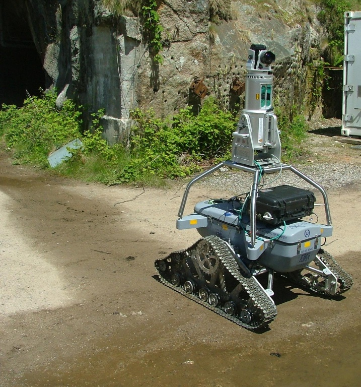
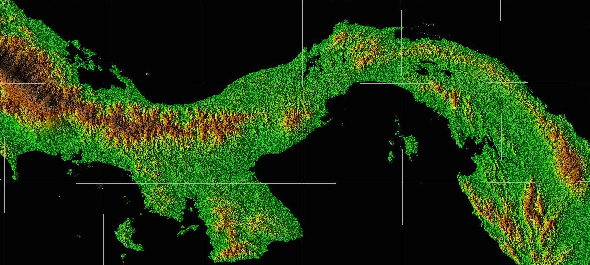
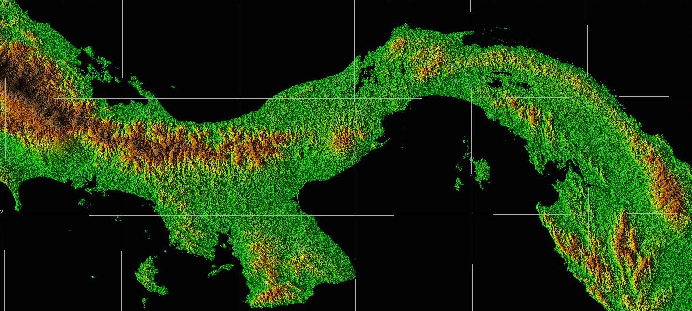
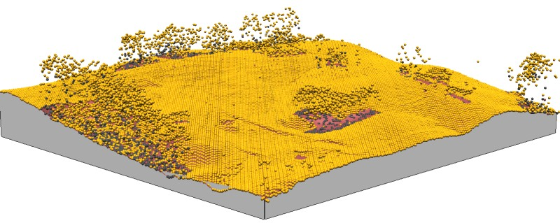
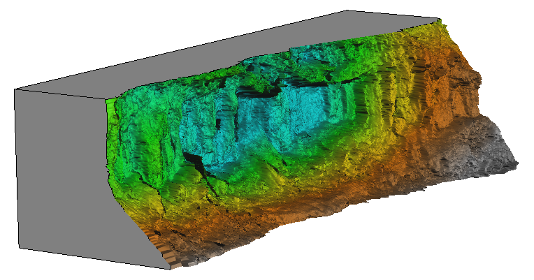

Geospatial data acquisition
Helena Mitasova
Learning objectives
- Understand the diversity of geospatial data sources
- Classify modern mapping technologies
- Understand the concept of georeferenced data
- Explain differences between the basic coordinate reference systems (CRS)
- Use CRS standards to find parameters for a given CRS
- Understand concept of re-projection between CRSs
Geospatial data acquisition
Current revolution in mapping technologies:
continuous data collection anywhere by anyone
Professional mapping technologies
- passive and active aerial and satellite sensors
- ground-based sensors: (RTK)GPS, total station, lidar
- in situ sensors for measuring environmental variables
such as air quality, river stages, water quality, soil moisture
Emergence of autonomous platforms: air, ground, water


Remote sensing: passive
Numerous satellite and airborne platforms and sensors, for example:
-
Landsat 1-9: landcover since 1972, 30m, multispectral
-
Terra: MODIS temperature 250m; ASTER radiance, DEM
-
SENTINEL 1-5P: landcover, temperature, ocean currents, atmosphere, multispectral
-
PLANET: new generation of small satellites: 170 small satellites mapping Earth daily at 3m resolution
See overview of Remote Sensors by NASA
Learn in GIS512 Introduction to Environmental Remote Sensing
Remote sensing: active
Satellite and airborne platforms and sensors, examples:
See overview of Remote Sensors by NASA
Learn in GIS512 Introduction to Environmental Remote Sensing
Satellite Remote Sensing
SRTM and LANDSAT example for Panama:
 


Images and data by NASA and NCSU MEAS
Satellite Remote Sensing
PLANET images for Jockey's Ridge change between September 2017 and July 2018 mapped at 3m resolution:
Data by planet.com
Airborne Remote Sensing
Lidar and orthophoto example for NCSU fields - sub-meter resolution mapping:


Most current systems combine active and passive sensors
Airborne Remote Sensing
3D construction site mapping at cm resolution using small unmanned aerial system (drone)
Mapped in 2021 by William Reckling, NCSU graduate student
NCSU GeoForAll Lab 3D models from UAS on sketchfab,
learn in GIS584 Mapping and Analytics Using UAS
Ground-based passive
Airborne orthophoto compared with on-ground mobile 360 degree camera streetview

Credits: Orthphoto from NC One Map, Ground-based image from Google streetview
Ground-based active
Terrestrial lidar: monitoring eroding stream bank at mm resolutions

Credits: Photo and data by Nathan Lyons, NCSU graduate student, 3D model by Helena Mitasova
Non-traditional data sources
Widespread GPS enabled technology:
- smartphones, tablets (GPS and lidar)
- webcams (AMOS)
- mobile sensor networks : cars, bicycles, scooters
- smart devices (internet of things): trash cans, utilities
Time spent by a group of people along a guided tour, displayed over a lidar-based DSM, learn more in
Mitas et al., 2020
From mapping to GIS
Acquired data are transformed into georeferenced,
discrete representations of landscape features
- georeferencing (often in real-time using GPS)
- feature or theme extraction (e.g. image classification)
- building GIS data model representation
(geometry, attributes, time)
- generating metadata
Georeferencing
Georeferenced data: location on Earth is represented in a Coordinate Referenced System (CRS)
- geodetic (geographic) coordinate system:
geoid -- ellipsoid -- latitude/longitude
- projected reference systems:
geoid -- ellipsoid -- developable surface -- plane -- x,y
Geodetic (Geographic) CRS
geoid -- ellipsoid -- latitude/longitude

- GPS, large regions, data exchange
- units: degree-minutes-seconds
- complex algorithms for distances, areas
National and state CRS
Defined by:
- Reference spheroid/geoid and datum:
e.g. GRS80-NAD83, WGS84, NATR2022
- Projection and its parameters, e.g. :
- Lambert Conformal Conic (LCC): states in US
- Universal Transverse Mercator (UTM): USGS, military
- Albers Equal Area (conic): USGS national map
- Vertical datum: e.g. NAVD88, NAPGD2022
NAD83 and NAVD88 to be replaced
with North American Terrestrial Reference Frame (NATR2022) and North American-Pacific Geopotential Datum of 2022 (NAPGD2022)
CRS standards
International Organization of Oil and Gas Producers (OGP) Surveying and Positioning Committee,
established standard for CRS definition with assigned EPSG codes
(initiated by European Petroleum Survey Group - EPSG)
Find the codes and CRS representation in many formats here epsg.io
Example: EPSG:4326 WGS84 used in GPS, or at
Spatial Reference website
Transition to ISO WKT 19162:2018 international standard notation (WKT:well known text, text markup language)
Popular Visualization CRS
Most common in on-line mapping systems:
Pseudo-Mercator
EPSG statement
We have reviewed the coordinate reference system used by Google, etc.
and believe that it is technically flawed. We will not devalue the EPSG dataset by
including such inappropriate geodesy and cartography.
In 1989, North American professional geographic organizations
called for a ban on all rectangular coordinate maps (especially Mercator).
https://geography.about.com/library/weekly/aa030201b.htm
https://demonstrations.wolfram.com/WorldMapProjections/
Popular Visualization CRS
World map in Pseudo Mercator with massive distortions farther from the equator,
compared with Winkel-Tripel projection with more realistic representation

 Pseudo Mercator was eventually included as
EPSG 3857
- it is not recommended for professional work
Pseudo Mercator was eventually included as
EPSG 3857
- it is not recommended for professional work
Coordinate systems in GIS
Representation of coordinate systems in GIS
- Metadata file
- EPSG codes
- ESRI PRJ file
- PROJ format
- Transition towards ISO WKT 19162:2018 international standard notation (WKT)
Coordinate transformations
Geospatial data often come in different CRS, e.g.:
- Federal agencies: Geodetic CRS (WGS84), Albers equal area, UTM
- State agencies: State Plane CRS
- Older data may have different datums (NAD27, NAD83)
Coordinate transformations
x,y -> longitude, latitude -> x’,y’
often performed on-fly, may be inaccurate and time consuming
- first reproject all data into a suitable common CRS
- then perform analysis and modeling
Summary
- we provided overview of modern technologies for geospatial data acquisition
- we explained the concept of coordinate reference systems and related standards